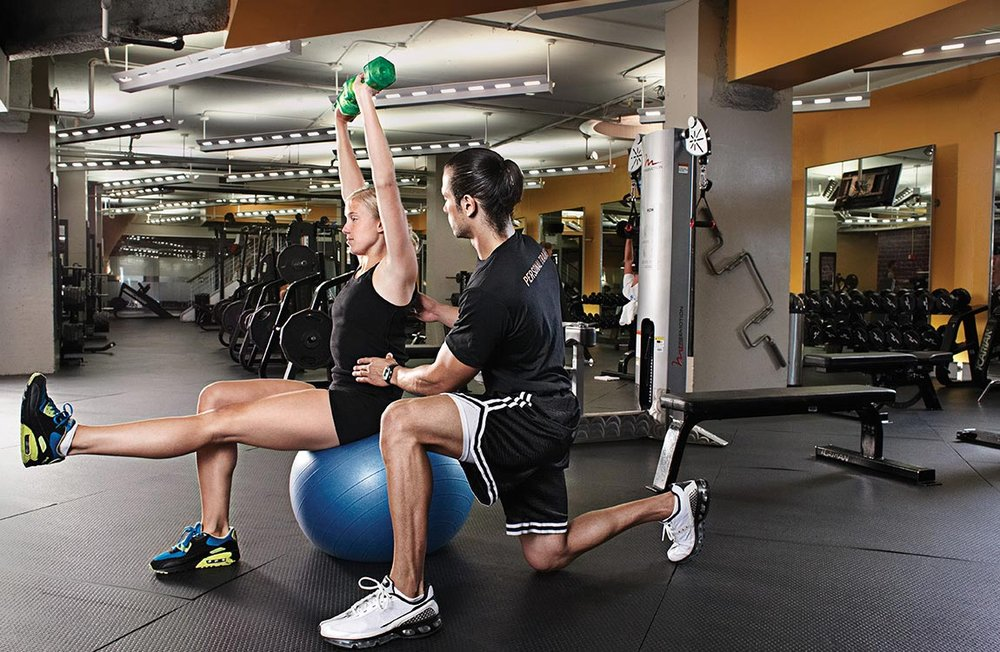

fitnes
Fitness Advice, Workout Tips, and More | Health.com

Skip to content Top Navigation
Explore Health.com Health.com Health Conditions A-Z News Coronavirus Diet & Nutrition Fitness Beauty Mind & Body Lifestyle Weight Loss Newsletter PromoProfile Menu
Your Account Your AccountAccount
Join Now Email Preferences this link opens in a new tab Newsletters Manage Your Subscription this link opens in a new tab Help LogoutMore
Give a Gift Subscription this link opens in a new tab Login SubscribeExplore Health.com
Health.com Health.com ExploreExplore
Is Your Doctor Gaslighting You? Here's What to Do
How to handle a physician who doubts or dismisses your symptoms. Read More9 Signs It's More Serious Than the Common Cold
Doctors explain how to tell if you have a head cold or something more serious that requires medical attention, such as the flu, strep throat, meningitis, or mono. Read MoreHow Your Period Changes During Your 20s, 30s, and 40s
From easier cramps to a heavier flow, here's a guide on what to expect decade by decade. Read More Health Conditions A-ZHealth Conditions A-Z
See all Health Conditions A-Z12 Anxiety Symptoms That Might Point to a Disorder
The symptoms of anxiety can be hard to detect. Here are the ones you need to pay attention to, and how to know if you may have an anxiety disorder. Allergies Anxiety Birth Control Breast Cancer Coronavirus Chronic Pain Cold, Flu, and Sinus Depression Digestive Health Diabetes (Type 2) Eczema Eye Health Fibromyalgia Heart Disease Headaches and Migraines Oral Health Pregnancy Psoriasis Sexual Health Skin Conditions Sleep Thyroid NewsNews
See all NewsShannen Doherty Reveals Stage 4 Breast Cancer Diagnosis—Here's What It Means
I'm petrified, the actress said when she shared the news that her breast cancer came back. Here's why a stage 4 breast cancer diagnosis can be so frightening. Celebrities Coronavirus Diet & NutritionDiet & Nutrition
The Best (and Worst) Diets of 2020, According to Experts
FYI: The keto diet is not number one. Food Nutrition Vitamins and Supplements Groceries Restaurants Diets Keto Diet Mediterranean Diet Whole30 Recipes FitnessFitness
See all Fitness10 Moves for a Cardio Workout at Home—No Equipment Required
Stay in your living room and still spike your heart rate. Cardio Workouts Strength Training Yoga Ab Workouts Arm Workouts Leg Workouts Butt Workouts Fitness Gear BeautyBeauty
See all BeautyThese 13 Women Prove Every Body Is a Bikini Body
We're loving their inspirational, body-positive messages. Skincare Makeup Hair Nails Mind & BodyMind & Body
See all Mind & BodyWhy Do People Lie? We Asked an Expert
Here's the truth about lying. Body Positivity Self-Care Misdiagnosed Invisible Illness LGBTQ+ Health Health Diversity and Inclusion LifestyleLifestyle
20 Things You Should Throw Away for Better Health
Clean out expired products and clutter to make way for a healthier you. Healthy Home Pets Family Relationships Style Holidays Sex Gifts Money Tech Medicare Best Life Now Weight Loss Newsletter PromoProfile Menu
Subscribe this link opens in a new tab Your Account Your AccountAccount
Join Now Email Preferences this link opens in a new tab Newsletters Manage Your Subscription this link opens in a new tab Help LogoutMore
Give a Gift Subscription this link opens in a new tab Login SweepstakesFollow us
Home Fitness Fitness ShareFitness
Fitness means different things to different people and Health has something for everyone, whether you’re just getting started with a workout routine or have been training since before TikTok was a thing. Get our latest expert moves, pro-tips, and recommendations for who to follow. Yoga Strength Training Leg Workouts Fitness Gear Cardio Workouts Butt Workouts Arm Workouts Ab WorkoutsWhat's Popular In Fitness
This 50 Push-Up Challenge Will Transform Your Body in 30 DaysThis 50 Push-Up Challenge Will Transform Your Body in 30 Days
Yes, you can get to 50 push-ups! Try our 30-day challenge. Read More 20 Plank Exercises That Will Seriously Strengthen Your Abs20 Plank Exercises You Can Do at Home
Say hello to stronger abs! These plank variations turn up the burn on your core workout. Read More Should You Be Worried If Your Joints Crack All the Time?Should You Be Worried If Your Joints Crack All the Time?
Should some in their 30s be nervous about popping, cracking joints? Health's medical editor weighs in. Read More 20 Strengthening Exercises for Anyone With Tight Hips20 Hip-Strengthening Exercises You Can Do at Home
Your hips do a lot of work—here's how to keep them strong. Read More This Move Will Work Your Glutes, Legs, and Abs—All at OnceHow to Do a Romanian Deadlift, According to Trainers
Looking for a stronger butt and core? Right this way... Read More The 10-Move At-Home Arm Workout for Strong ShouldersYou Can Do This 10-Move Arm Workout At Home—No Weights Required
Bonus: You'll work your abs, too. Read More AdvertisementMore Fitness
This Heart-Pumping Jump Rope Workout Is the Cardio You’ve Been MissingThis Heart-Pumping Jump Rope Workout Is the Cardio You’ve Been Missing
Kick your routine into high gear with these play-inspired moves. Read More Gym Closed? You Can Try These 9 Workouts At-Home For Free Right Now9 Totally Free At-Home Workouts for When Coronavirus is Keeping You Inside
Because staying home doesn't mean you can't work out. Read More 3 Barbell Exercises You re Probably Doing Wrong—and How to Fix Them3 Barbell Exercises You're Probably Doing Wrong—and How to Fix Them
Read More 7 Stationary Bike Workouts You Can Do at Home—No Spin Studio Necessary7 Stationary Bike Workouts for a Spin Routine You Can Do Anywhere
Read More This Equipment-Free Glute Workout Will Have Your Booty on FireTone It Up’s Karena Dawn Shows How to Get a Toned Booty Without Any Equipment
Read More The BodyBoss Home Gym Is Small Enough to Store Under Your Bed, But Still Gives a Full-Body WorkoutThe BodyBoss Home Gym Is Small Enough to Store Under Your Bed, But Still Gives a Full-Body Workout
Read MoreThe 9 Best Cushioned Running Shoes, According to Reviewers
These plush options from podiatrist-recommended brands will absorb impact and keep your feet pain-free.
CloseThis 8-Move Dumbbell Routine Will Work Your Entire Body
This Photo of Shakira in a Bikini Nearly Broke the Internet—Here's How the Singer Stays Fit
The 5 Lower-Body Moves Ariana Grande Swears By, According to Her Trainer
7 Pieces of Home Gym Equipment to Boost Your Socially Distant Workouts
Britney Spears Says She Used to Feel 'Ice Cold' After a Workout—Here's Why That Can Happen
All Fitness
These Powerbeats Pro Headphones Are My Favorite for Working Out—and They're $50 Off Right NowThese Powerbeats Pro Headphones Are My Favorite for Working Out—and They're $50 Off Right Now
Read More Why Working Out in the Heat Could Benefit Your Training, According to ScienceHeat Training: Everything You Need to Know, Including Benefits and Safety Tips
Read More This Sweat-Wicking Tank Keeps Amazon Shoppers Cool During Summer WorkoutsThis Sweat-Wicking Tank Keeps Amazon Shoppers Cool During Summer Workouts
Read More A Pulse Oximeter Is the One Essential Your Medicine Cabinet Is Missing—Here’s Where to Buy OneThe 6 Best Pulse Oximeters You Can Buy Online Right Now, According to Customer Reviews
Read More This Dumbbell Workout Only Has 10 Moves—And You Can Do It Right at HomeThe 10-Move Dumbbell Workout You Can Do Right at Home
Read More Jennifer Lopez Has Been Riding an ElliptiGO, an Outdoor Elliptical BikeJennifer Lopez Was Spotted Riding an Outdoor Elliptical Bike—But, What Exactly Is That?
Read More This 21-Day Mini Band Challenge Will Fire Up Your Entire Body—No Gym RequiredThe 21-Day Mini Resistance Band Challenge That Will Tone and Strengthen Your Entire Body
Read More Amazon Shoppers Call This $8 Cooling Towel a ‘Godsend’ During Hot Summer MonthsThis $9 Cooling Towel on Amazon Stays Cold for 3 Hours
Read More Jennifer Aniston Called These Leggings a 'Fitness Staple'—and They're On Major Sale Right NowJennifer Aniston Called These Leggings a 'Fitness Staple'—and They're On Major Sale Right Now
Read More People Are Saying That This 5-Minute Japanese Towel ‘Exercise’ Will Give You Flat Abs in 10 DaysPeople Claim This 5-Minute Japanese Towel Exercise Will Give You Flat Abs—But Here's What Trainers Think
Read More These Are the Muscles You Should be Working If You Want to Get Stronger and FasterWhat Are Fast-Twitch Muscle Fibers and Why Is it Important to Keep Them Strong?
Read More How Much Exercise Do You Need, and Which Type is Best for You?How Much Exercise Do You Need, and Which Type is Best for You?
Read More I’ve Tried Countless Pairs of Running Shorts, And These Are My New FavoritesI’ll Be Wearing the Hudson Shorts From Outdoor Voices All Summer
Read More The Unexpected Full Body Workout Everyone’s Hooked on During QuarantineIs Roller Skating a Good Workout? 5 Top-Rated Roller Skates to Help You Feel the Burn
Read More Amanda Kloots Opens Up About Staying Positive Amid Husband Nick Cordero’s COVID-19 BattleAmanda Kloots Opens Up About Staying Positive Amid Husband Nick Cordero’s COVID-19 Battle
Read More After Ahmaud Arbery’s Shooting, Running While Black Doesn’t Get Any EasierAfter Ahmaud Arbery’s Shooting, Running While Black Doesn’t Get Any Easier
Read More Does Muscle Weigh More Than Fat? The Answer's More Complicated Than You May ThinkDoes Muscle Weigh More Than Fat? The Answer's More Complicated Than You May Think
Read More J.Lo Shows Off Her Insane Abs But Her Sports Bra is Actually Stealing the ShowJ.Lo Shows Off Her Insane Abs But Her Sports Bra is Actually Stealing the Show
Read More This Sports Bra Is So Comfortable, I Own It in 5 Different ColorsThis Sports Bra Is So Comfortable, I Own It in 5 Different Colors
Read More High-Intensity, Low-Impact Training Will Burn Calories and Protect Your JointsHigh-Intensity, Low-Impact Training Will Burn Calories and Protect Your Joints
Read More This Relaxing Sound Bath Meditation Will Help You De-Stress in Just 10 MinutesThis Sound Bath Meditation Will Give You the Zen Midday Break You Deserve
Read More The 13 Best Workout Tank Tops to Keep You Cool While ExercisingThe 13 Best Workout Tank Tops to Keep You Cool While Exercising
Read More This 20-Minute Boxing Workout Will Help You Blow Off Steam While Stuck at HomeThis 20-Minute At-Home Boxing Workout Will Help You Blow Off Steam While Stuck in Quarantine
Read More The 6 Best Knee Compression Sleeves for Every Type of ActivityThe 6 Best Knee Compression Sleeves for Every Type of Activity
Read More Is it Safe to Go to the Gym When it Reopens?Gyms May Start Reopening Soon—But Will it Be Safe to Go Back?
Read More Load More AdvertisementShare options
Pinterest Facebook Tweet Email Send Text Message Health.comMagazines & More
Learn More
About Us Subscribe this link opens in a new tab Contact us Advertise this link opens in a new tab Content Licensing this link opens in a new tab SitemapConnect
Follow Us Subscribe to Our Newsletter Other Meredith SitesOther Meredith Sites
4 Your Health this link opens in a new tab Allrecipes this link opens in a new tab All People Quilt this link opens in a new tab Better Homes & Gardens this link opens in a new tab Bizrate Insights this link opens in a new tab Bizrate Surveys this link opens in a new tab Coastal Living this link opens in a new tab Cooking Light this link opens in a new tab Daily Paws this link opens in a new tab Diabetic Living this link opens in a new tab EatingWell this link opens in a new tab Eat This, Not That this link opens in a new tab Entertainment Weekly this link opens in a new tab Extra Crispy this link opens in a new tab Family Circle this link opens in a new tab Fitness Magazine this link opens in a new tab Fit Pregnancy this link opens in a new tab Food & Wine this link opens in a new tab Hello Giggles this link opens in a new tab Instyle this link opens in a new tab Martha Stewart this link opens in a new tab Martha Stewart Weddings this link opens in a new tab Midwest Living this link opens in a new tab More this link opens in a new tab MyRecipes this link opens in a new tab MyWedding this link opens in a new tab My Food and Family this link opens in a new tab MyLife this link opens in a new tab Parenting this link opens in a new tab Parents this link opens in a new tab People this link opens in a new tab People en Español this link opens in a new tab Rachael Ray Magazine this link opens in a new tab Real Simple this link opens in a new tab Ser Padres this link opens in a new tab Shape this link opens in a new tab Siempre Mujer this link opens in a new tab Southern Living this link opens in a new tab SwearBy this link opens in a new tab Traditional Home this link opens in a new tab Travel & Leisure this link opens in a new tab Health.com is part of the Meredith Health Group. © Copyright 2020 Meredith Corporation. All rights reserved. The material in this site is intended to be of general informational use and is not intended to constitute medical advice, probable diagnosis, or recommended treatments. All products and services featured are selected by our editors. Health.com may receive compensation for some links to products and services on this website. Offers may be subject to change without notice. Privacy Policy this link opens in a new tab Terms of Service this link opens in a new tab Ad Choices this link opens in a new tab California Do Not Sell this link opens a modal window Web Accessibility this link opens in a new tab © Copyright . All rights reserved. Printed from https://www.health.com this link is to an external site that may or may not meet accessibility guidelines.Posted by Jack  Read more
Read more  Comments (15)
Comments (15)  2020.09.14 10:07
2020.09.14 10:07